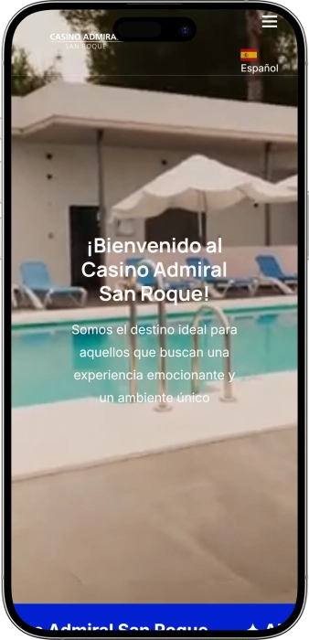

Oferta exclusiva de bienvenida de
Oferta exclusiva de bienvenida de
Vive la Emoción del Casino Admiral San Roque
Los mejores casinos
Detalles de bonificación
Casino
Bonos
Rate
Giros gratis
Más info
Conseguir
Ventajas
- ¿Buscas entretenimiento de calidad con los mejores premios? Casino Admiral San Roque ofrece una experiencia única con juegos clásicos, tecnología de última generación y un ambiente acogedor. Descubre lo que nos hace especiales:
-
Más de 100 máquinas de azar con los premios más altos de la provincia
-
Juegos clásicos de casino: ruleta americana y blackjack profesional
-
Sala de bingo electrónico con tecnología avanzada y premios diarios
-
Admiral Arena para eventos especiales, celebraciones y entretenimiento
-
Restaurante con exquisita gastronomía para disfrutar antes o después del juego
-
Equipo profesional dedicado a brindarte una experiencia inolvidable
- Únete a miles de jugadores que eligen Admiral San Roque para vivir momentos emocionantes. Nuestro compromiso con la excelencia garantiza tu satisfacción. ¡Te esperamos!
Admiral San Roque Casino App


Nuestra Historia en San Roque
Casino Admiral San Roque es un referente del entretenimiento en la provincia. Nuestra misión es ofrecer experiencias memorables combinando tradición y modernidad. Contamos con la infraestructura más avanzada y un equipo apasionado por el servicio de excelencia.
- Expansión de la sala de juegos con más de 100 máquinas de última generación
- Inauguración del Admiral Arena para eventos y entretenimiento en vivo
- Incorporación de sala de bingo electrónico con premios récord
- Apertura de restaurante gourmet para complementar la experiencia
Operamos bajo estrictas normativas de juego responsable y seguridad. Nuestras máquinas cumplen con certificaciones oficiales de aleatoriedad. La protección de nuestros clientes es prioridad absoluta, garantizando un entorno seguro y transparente. Continuamos innovando para ofrecer nuevas experiencias de entretenimiento. Nuestro compromiso con el juego responsable guía cada decisión. Visítanos y descubre por qué somos la elección preferida de jugadores exigentes.
Third paragraph of history
Guía Completa de Juegos de Casino
Descubre el Universo del Casino Admiral San Roque
El mundo del casino ha evolucionado significativamente, combinando la emoción de los juegos tradicionales con la tecnología más avanzada. En Casino Admiral San Roque, ofrecemos una experiencia integral que satisface tanto a jugadores experimentados como a quienes se inician en este apasionante entretenimiento. Nuestra amplia selección de juegos, ambiente acogedor y servicios premium nos convierten en el destino ideal para disfrutar de momentos inolvidables. La clave de nuestra propuesta está en la diversidad: desde las clásicas mesas de ruleta y blackjack hasta las modernas máquinas de azar con jackpots progresivos que alcanzan cifras extraordinarias.
La ubicación estratégica en San Roque nos permite recibir visitantes de toda la provincia y regiones cercanas. Nuestras instalaciones han sido diseñadas pensando en el confort y la comodidad, con espacios amplios que facilitan la circulación y crean un ambiente relajado. El equipo profesional que conforma Admiral San Roque recibe formación continua para garantizar un servicio de primera clase. Entendemos que cada jugador es único, por eso personalizamos la atención según las preferencias individuales. La combinación de infraestructura moderna, variedad de juegos y atención personalizada establece un estándar de excelencia difícil de igualar.
Máquinas de Azar: Tecnología y Premios Extraordinarios
Nuestra sala principal alberga más de 100 máquinas de azar de última generación, representando la oferta más completa y variada de la provincia. Cada máquina ha sido seleccionada cuidadosamente para ofrecer diferentes temáticas, niveles de volatilidad y rangos de apuesta que se adaptan a todos los perfiles de jugador. Los premios disponibles en nuestras máquinas destacan por ser los más elevados de la zona, con jackpots progresivos que crecen constantemente hasta alcanzar cantidades verdaderamente impresionantes. La tecnología implementada garantiza resultados completamente aleatorios, cumpliendo con los más estrictos estándares de certificación oficial.
Las máquinas están organizadas en diferentes secciones según el tipo de juego y denominación. Encontrarás desde slots clásicos con mecánicas tradicionales de tres rodillos hasta sofisticadas video slots con múltiples líneas de pago, rondas de bonificación interactivas y funciones especiales que multiplican las posibilidades de ganancia. Los temas disponibles son extraordinariamente diversos: aventuras épicas, mitología antigua, cultura popular, naturaleza, deportes y muchos más. Esta variedad asegura que siempre encuentres una máquina que se ajuste a tus gustos personales y presupuesto de juego. Además, renovamos periódicamente nuestra selección para incorporar los lanzamientos más recientes del mercado.
- Slots Clásicos: Máquinas tradicionales de tres rodillos que mantienen la esencia del casino clásico, ideales para quienes prefieren mecánicas simples y directas con premios instantáneos y sin complicaciones.
- Video Slots Modernas: Juegos de cinco rodillos o más con gráficos espectaculares, animaciones fluidas, bandas sonoras envolventes y múltiples líneas de pago que pueden alcanzar hasta 243 formas de ganar simultáneamente.
- Jackpots Progresivos: Máquinas conectadas en red donde una pequeña porción de cada apuesta contribuye al premio acumulado, creando botes que pueden transformar tu vida con un solo giro afortunado.
- Máquinas Multijuego: Terminales versátiles que ofrecen varios títulos en un mismo dispositivo, permitiéndote cambiar de juego sin moverte de tu asiento y explorar diferentes opciones de entretenimiento.
- Denominaciones Variables: Flexibilidad para ajustar el valor de cada crédito según tu presupuesto, desde apuestas conservadoras de céntimos hasta niveles premium para jugadores de alto riesgo.
Juegos de Mesa Clásicos: Ruleta y Blackjack Profesional
Los juegos de mesa representan la esencia tradicional del casino, y en Admiral San Roque los hemos elevado a su máxima expresión. Nuestra ruleta americana ofrece la emoción clásica de este icónico juego, con una rueda impecablemente equilibrada y un tapete diseñado para facilitar la colocación de apuestas. Los crupieres profesionales conducen cada partida con elegancia y precisión, explicando las reglas a los principiantes y manteniendo un ritmo dinámico para los jugadores experimentados. La ruleta americana, con su doble cero, añade un elemento adicional de emoción y estrategia que atrae tanto a apostadores conservadores como a quienes buscan emociones más intensas.
El blackjack es el juego de cartas más popular del casino, combinando habilidad, estrategia y suerte en proporciones perfectas. Nuestras mesas de blackjack siguen las reglas estándar internacionales, permitiendo doblar, dividir pares y aplicar estrategias básicas que reducen la ventaja de la casa. Los crupieres están entrenados para mantener un ambiente amistoso y profesional, resolviendo dudas sobre las mejores jugadas sin interrumpir el flujo natural del juego. La interacción social en las mesas de blackjack crea una atmósfera única donde los jugadores comparten la tensión de cada carta revelada. Organizamos torneos especiales que añaden competitividad y premios extraordinarios.
- Ruleta Americana Profesional: Mesa con rueda de alta precisión, cero y doble cero, múltiples opciones de apuesta desde plenos hasta columnas, seises y docenas con pagos diferenciados según el riesgo.
- Blackjack Clásico: Juego de cartas contra la banca buscando llegar a 21 sin pasarse, con posibilidad de doblar apuestas en momentos estratégicos y dividir pares para duplicar oportunidades.
- Límites de Apuesta Flexibles: Mesas con diferentes mínimos y máximos que permiten a jugadores de todos los presupuestos disfrutar de la experiencia sin restricciones económicas que limiten la diversión.
- Crupieres Certificados: Personal profesional con formación especializada en conducción de juegos, trato al cliente y resolución de situaciones complejas para garantizar partidas impecables.
- Ambiente Premium: Iluminación estudiada, asientos ergonómicos y disposición espacial optimizada para crear la experiencia de casino más auténtica y cómoda posible.
Bingo Electrónico: Innovación y Premios Diarios
La sala de bingo electrónico representa una de las apuestas más innovadoras de Casino Admiral San Roque. Este espacio dedicado combina la emoción social del bingo tradicional con las ventajas tecnológicas de los sistemas digitales. Los terminales de última generación permiten jugar múltiples cartones simultáneamente sin perder detalle de ningún número cantado, gracias a sistemas automáticos de marcado y alertas visuales cuando estás cerca de completar líneas o bingos. Los premios diarios están garantizados, con botes progresivos que crecen en cada sesión hasta alcanzar cifras realmente atractivas para todos los participantes.
El sistema electrónico elimina errores humanos y agiliza enormemente el desarrollo de las partidas. Puedes concentrarte completamente en disfrutar del juego mientras la tecnología se encarga de controlar tus cartones, marcar números automáticamente y notificarte instantáneamente cuando logras un premio. La sala dispone de pantallas gigantes donde se proyectan los números cantados en tiempo real, estadísticas de la sesión y el ranking de proximidad al bingo. Esta transparencia absoluta genera confianza y añade emoción al ver cómo te acercas al premio mayor. Las sesiones se organizan en horarios regulares a lo largo del día, permitiéndote planificar tus visitas según tu disponibilidad.
- Terminales Táctiles Avanzados: Pantallas de alta definición con interfaz intuitiva que facilita la compra de cartones, configuración de preferencias y visualización clara de todos tus números en juego.
- Marcado Automático: Sistema inteligente que marca tus números instantáneamente cuando son cantados, eliminando el estrés de controlar múltiples cartones manualmente y evitando premios perdidos por despiste.
- Botes Progresivos Garantizados: Premios acumulados que crecen sesión tras sesión hasta ser ganados, con sorteos especiales en fechas señaladas que multiplican las cantidades habituales.
- Múltiples Modalidades: Bingo tradicional de 75 y 90 bolas, patrones especiales, juegos rápidos y variantes temáticas que añaden variedad y mantienen el interés renovado constantemente.
- Ambiente Social: Sala diseñada para fomentar la interacción entre jugadores, con espacios cómodos que permiten charlar durante las partidas y celebrar conjuntamente cada premio obtenido.
Admiral Arena: Eventos y Entretenimiento Premium
El Admiral Arena es nuestro espacio polivalente dedicado a eventos especiales que complementan la oferta de juegos tradicionales. Esta sala versátil acoge actuaciones musicales en vivo, presentaciones de artistas locales e internacionales, celebraciones privadas, torneos especiales y eventos temáticos que transforman cada visita en una experiencia única. La infraestructura técnica incluye sistema de sonido profesional, iluminación escénica configurable y escenario adaptable a diferentes tipos de espectáculos. La capacidad del recinto permite albergar desde eventos íntimos hasta grandes celebraciones con centenares de asistentes.
Organizamos una programación variada que renueva constantemente la oferta cultural y de entretenimiento. Desde actuaciones de música en vivo que abarcan géneros diversos hasta monólogos de comedia, pasando por exhibiciones deportivas y presentaciones audiovisuales. El calendario de eventos se publica con antelación para que puedas planificar tu asistencia a las actividades que más te interesen. Muchos eventos tienen entrada gratuita para clientes del casino, añadiendo valor a tu experiencia sin coste adicional. La combinación de juego y espectáculo en vivo crea una propuesta de ocio integral difícil de encontrar en otros establecimientos de la región.
Gastronomía de Calidad: El Complemento Perfecto
Nuestro restaurante representa el complemento ideal para una jornada de entretenimiento en Casino Admiral San Roque. La carta ha sido diseñada por chefs profesionales que combinan técnicas culinarias tradicionales con toques de innovación contemporánea. Ofrecemos desde platos ligeros perfectos para un descanso rápido entre partidas hasta menús completos para disfrutar de una experiencia gastronómica memorable. Los ingredientes son seleccionados cuidadosamente, priorizando productos frescos y de temporada que garantizan sabores auténticos y presentaciones impecables. El ambiente del restaurante equilibra elegancia y comodidad, creando el escenario perfecto para relajarte y recargar energías.
La carta incluye opciones para todos los gustos y preferencias dietéticas. Encontrarás carnes premium, pescados frescos, arroces elaborados con esmero, ensaladas creativas y postres artesanales que ponen el broche de oro a cada comida. La bodega ofrece una selección de vinos nacionales e internacionales cuidadosamente elegidos para maridar perfectamente con cada plato. El servicio es atento sin resultar intrusivo, permitiéndote disfrutar de tu comida a tu propio ritmo. Muchos clientes eligen combinar su sesión de juego con una cena, creando una experiencia de ocio completa que abarca entretenimiento y gastronomía en un mismo lugar. Horarios flexibles permiten desayunos, comidas, meriendas y cenas según tu conveniencia.
Compromiso con el Juego Responsable
En Casino Admiral San Roque, el juego responsable constituye un pilar fundamental de nuestra filosofía operativa. Entendemos que el entretenimiento debe desarrollarse siempre dentro de parámetros saludables, sin comprometer el bienestar personal ni familiar de nuestros clientes. Por ello, implementamos múltiples herramientas y recursos diseñados para promover prácticas de juego conscientes. Nuestro personal recibe formación específica para identificar comportamientos problemáticos y ofrecer apoyo cuando es necesario. La información sobre límites, autoexclusión y recursos de ayuda está visible en todo el establecimiento, accesible para quien la necesite en cualquier momento.
Ofrecemos sistemas de autolimitación que permiten establecer restricciones personalizadas de tiempo y gasto. Estos límites, una vez configurados, se respetan estrictamente para proteger a los jugadores de decisiones impulsivas tomadas en momentos de emoción. Colaboramos activamente con organizaciones especializadas en prevención de ludopatía, facilitando acceso a asesoramiento profesional cuando se detectan señales de alerta. El objetivo es que cada visita a nuestro casino sea una experiencia positiva, divertida y siempre controlada. Creemos firmemente que un jugador informado y consciente disfruta mucho más del entretenimiento y mantiene una relación saludable con el juego a largo plazo.
La transparencia en las probabilidades de los juegos es otro aspecto crucial de nuestro compromiso. Todas las máquinas y juegos de mesa operan con parámetros certificados oficialmente, garantizando resultados completamente aleatorios. Esta información está disponible para consulta, permitiéndote entender exactamente las mecánicas de cada juego antes de participar. Promovemos activamente el concepto del juego como entretenimiento, no como método para resolver problemas económicos. Nuestro equipo está entrenado para mantener conversaciones constructivas sobre hábitos de juego cuando es apropiado, siempre desde el respeto y la confidencialidad absoluta hacia cada persona.
Proveedores de software
Cómo Planificar tu Visita al Casino
Guía Práctica para Disfrutar de Admiral San Roque
Planificar adecuadamente tu visita a Casino Admiral San Roque maximiza el disfrute y te permite aprovechar todas las facilidades disponibles. Conocer los servicios, horarios, sistemas de pago y recomendaciones prácticas transforma una visita casual en una experiencia verdaderamente memorable. Esta guía completa te proporciona toda la información necesaria para que tu jornada en el casino sea cómoda, segura y llena de entretenimiento. Desde el momento en que cruzas nuestras puertas hasta tu despedida, cada detalle ha sido pensado para ofrecerte el mejor servicio posible. Te invitamos a conocer todos los aspectos prácticos que harán de tu estancia algo excepcional.
Horarios y Accesibilidad
Casino Admiral San Roque mantiene horarios amplios diseñados para adaptarse a diferentes preferencias y rutinas de nuestros visitantes. Abrimos nuestras puertas en horario extendido que abarca desde mediodía hasta altas horas de la madrugada, permitiendo que tanto madrugadores como noctámbulos encuentren su momento ideal para disfrutar. Los fines de semana y vísperas de festivos ampliamos aún más el horario para satisfacer la mayor demanda. El acceso es libre para mayores de edad con documentación válida que acredite la mayoría de edad legal. El control de acceso es riguroso para cumplir con la normativa vigente y garantizar un ambiente seguro para todos.
La ubicación en San Roque ofrece excelente accesibilidad desde diferentes puntos de la provincia. Disponemos de amplio aparcamiento gratuito con vigilancia que facilita el acceso en vehículo propio. Para quienes prefieren transporte público, varias líneas de autobús conectan con paradas cercanas al establecimiento. Las instalaciones cumplen con normativas de accesibilidad universal, con rampas, ascensores y aseos adaptados para personas con movilidad reducida. El diseño arquitectónico elimina barreras, permitiendo que todos los visitantes circulen cómodamente por todas las áreas del casino sin limitaciones.
- Horario Extendido: Apertura desde mediodía hasta la madrugada con horarios especiales en fines de semana, permitiéndote elegir el momento que mejor se ajuste a tu agenda personal sin restricciones.
- Aparcamiento Vigilado Gratuito: Amplias plazas de estacionamiento sin coste adicional con vigilancia permanente para la tranquilidad de dejar tu vehículo mientras disfrutas del casino.
- Transporte Público: Conexiones mediante líneas de autobús que facilitan el acceso desde diferentes localidades cercanas sin necesidad de vehículo propio.
- Accesibilidad Universal: Instalaciones completamente adaptadas para personas con movilidad reducida, garantizando que todos puedan disfrutar de la experiencia sin barreras arquitectónicas.
- Control de Acceso: Verificación de mayoría de edad mediante documento oficial para cumplir estrictamente con la legislación y mantener un ambiente apropiado.
Métodos de Pago y Gestión de Fondos
Admiral San Roque ofrece múltiples opciones para gestionar tus fondos de manera cómoda y segura. Aceptamos efectivo en todas nuestras cajas, donde personal especializado procesa transacciones con rapidez y confidencialidad absoluta. Las máquinas modernas aceptan billetes directamente, eliminando la necesidad de cambiar dinero previamente en fichas o monedas. Para los juegos de mesa, puedes canjear efectivo por fichas en la caja principal o directamente en las mesas con el crupier. El proceso es sencillo y transparente, permitiéndote comenzar a jugar en cuestión de segundos desde tu llegada.
La seguridad en las transacciones es prioritaria en nuestro establecimiento. Todas las operaciones quedan registradas mediante sistemas informatizados que previenen errores y protegen tanto al casino como a los clientes. Los premios se cobran en las cajas principales presentando los tickets o fichas ganadas. Para cantidades significativas, podemos organizar pagos mediante transferencia bancaria que añaden comodidad y seguridad al proceso. Recomendamos establecer un presupuesto personal antes de comenzar a jugar y respetarlo estrictamente para mantener el entretenimiento dentro de límites responsables y saludables.
| Método de Pago | Disponibilidad | Ventajas | Tiempo de Proceso |
|---|---|---|---|
| Efectivo | Todas las cajas y máquinas | Inmediato, sin comisiones adicionales | Instantáneo |
| Fichas de Mesa | Caja principal y mesas de juego | Facilita gestión en juegos clásicos | Inmediato |
| Tickets de Máquina | Sistema TITO en todas las slots | Movilidad entre máquinas sin efectivo | Instantáneo |
| Transferencia Bancaria | Para premios significativos | Seguridad en grandes cantidades | 24-48 horas |
| Canje en Caja | Caja principal del casino | Cobro de premios y fichas | Inmediato |
Servicios Adicionales y Atención al Cliente
El compromiso de Admiral San Roque con la excelencia se extiende más allá de los juegos, abarcando servicios complementarios que enriquecen tu experiencia. Contamos con guardarropía gratuita donde puedes dejar abrigos y bolsas de forma segura mientras disfrutas del casino. El personal de atención al cliente está distribuido estratégicamente por todo el establecimiento, identificable fácilmente y siempre dispuesto a resolver dudas, explicar reglas de juegos o ayudarte con cualquier gestión. La formación continua de nuestro equipo garantiza respuestas precisas y un trato cortés en todo momento.
Ofrecemos conexión WiFi gratuita en todas las instalaciones para que puedas mantenerte conectado si lo deseas. Las zonas comunes incluyen asientos cómodos donde descansar entre sesiones de juego o esperar a tus acompañantes. El servicio de restauración permite solicitar bebidas que se sirven directamente en tu posición de juego, evitando interrupciones innecesarias. Para grupos que deseen celebraciones especiales, organizamos eventos privados en Admiral Arena con paquetes personalizados que incluyen catering, entretenimiento y acceso preferente a las instalaciones. La flexibilidad y atención personalizada distinguen nuestra propuesta de servicio.
- Guardarropía Gratuita: Servicio de custodia segura para abrigos, bolsas y objetos personales que no necesites llevar contigo durante el juego, liberándote de cargas incómodas.
- Atención Personalizada: Personal disponible en todo momento para resolver dudas sobre juegos, servicios, horarios o cualquier aspecto relacionado con tu visita al casino.
- WiFi Gratuito: Conexión a internet de alta velocidad en todas las áreas para que puedas consultar información, comunicarte o entretenerte durante los descansos.
- Servicio en Mesa: Posibilidad de solicitar bebidas y aperitivos que se sirven directamente en tu posición de juego sin necesidad de abandonar tu máquina o mesa favorita.
- Eventos Privados: Organización de celebraciones personalizadas en Admiral Arena con paquetes flexibles que se adaptan a grupos de diferentes tamaños y presupuestos.
Consejos para Maximizar tu Experiencia
Aprovechar al máximo tu visita a Admiral San Roque implica conocer algunos consejos prácticos que mejoran significativamente la experiencia. Primero, establece un presupuesto claro antes de llegar y cíñete a él estrictamente sin tentaciones de superarlo. Esta disciplina garantiza que el entretenimiento permanezca dentro de límites saludables. Segundo, familiarízate con las reglas de los juegos antes de apostar cantidades significativas. Muchas máquinas incluyen secciones de información detallada, y los crupieres explican gustosamente las mecánicas de los juegos de mesa a quienes lo soliciten.
Gestiona tu tiempo inteligentemente alternando períodos de juego activo con descansos. Levantarte, estirar las piernas, tomar algo en el restaurante o simplemente relajarte observando el ambiente ayuda a mantener la concentración y evita la fatiga. Los mejores jugadores entienden que el casino es un maratón, no un sprint. Aprovecha los eventos especiales y promociones que organizamos regularmente, ya que añaden valor extra a tu visita. Finalmente, recuerda que el objetivo principal es el entretenimiento. Ganar es emocionante, pero disfrutar del proceso, la atmósfera y la experiencia social tiene igual importancia.
- Establece Límites Claros: Define presupuesto y tiempo antes de comenzar, respetando estos límites rigurosamente para mantener el entretenimiento dentro de parámetros saludables y responsables.
- Aprende las Reglas: Invierte tiempo en comprender las mecánicas de cada juego antes de apostar, aumentando tus probabilidades y disfrutando más del proceso de toma de decisiones.
- Toma Descansos Regulares: Alterna períodos de juego con pausas para mantener la concentración óptima, evitar fatiga mental y disfrutar también del restaurante y ambiente general del casino.
- Aprovecha Promociones: Consulta el calendario de eventos especiales, torneos y promociones que multiplican el valor de tu visita con premios adicionales y experiencias únicas.
- Prioriza el Entretenimiento: Mantén la perspectiva correcta recordando que el objetivo principal es divertirse y disfrutar, siendo las ganancias potenciales un extra agradable pero no el fin único.
Normas de Conducta y Ambiente
Admiral San Roque mantiene estándares de conducta que garantizan una experiencia agradable para todos los visitantes. Esperamos que los clientes traten al personal y demás jugadores con respeto y cortesía. No se tolera lenguaje ofensivo, comportamientos agresivos ni actitudes que perturben el disfrute de otros. El código de vestimenta es casual-elegante, prohibiéndose ropa deportiva excesivamente informal o prendas que puedan resultar inapropiadas en un establecimiento de estas características. Esta política ayuda a mantener el ambiente premium que caracteriza al casino.
El consumo de alcohol está permitido pero debe realizarse con moderación. El personal está autorizado a denegar servicio a personas que muestren signos evidentes de intoxicación, tanto por su seguridad como por la del resto de clientes. Está prohibido fumar en las salas de juego principales, habilitándose zonas específicas para fumadores que cumplen con la normativa vigente. El uso de dispositivos móviles está permitido, pero solicitamos mantener conversaciones telefónicas en áreas comunes para no disturbar la concentración de otros jugadores. Fotografías y vídeos requieren autorización previa por temas de privacidad y seguridad.
Programa de Fidelización y Beneficios
Los clientes habituales de Admiral San Roque disfrutan de ventajas exclusivas a través de nuestro programa de fidelización. El registro es gratuito y te proporciona una tarjeta personal que acumula puntos cada vez que juegas en máquinas o participas en juegos de mesa. Estos puntos se canjean posteriormente por créditos de juego, consumiciones en el restaurante, entradas preferentes a eventos en Admiral Arena o participación en sorteos especiales con premios excepcionales. El sistema recompensa la lealtad de manera tangible y significativa.
Los niveles del programa escalan según tu actividad, desbloqueando beneficios progresivamente más atractivos. Los miembros de niveles superiores reciben invitaciones exclusivas a torneos VIP, acceso prioritario a nuevas máquinas antes de su apertura general, bonificaciones especiales en fechas señaladas y atención personalizada por parte de un gestor dedicado. El programa está diseñado para reconocer y valorar la preferencia de nuestros clientes más asiduos, añadiendo una dimensión extra de valor a cada visita. Consulta los detalles completos en el mostrador de atención al cliente donde el personal te explicará todas las ventajas disponibles.
Las promociones especiales se comunican regularmente mediante newsletters digitales para miembros registrados. Estas comunicaciones incluyen información sobre próximos eventos, ofertas temporales y novedades en la oferta de juegos. Suscribirse a estas actualizaciones te mantiene informado de las mejores oportunidades para maximizar tu entretenimiento. La privacidad de tus datos está garantizada, utilizándose exclusivamente para fines relacionados con el servicio del casino y nunca compartidos con terceros sin tu consentimiento explícito.
Preguntas frecuentes
Casino Admiral San Roque ofrece más de 100 máquinas de azar con diferentes temáticas y niveles de apuesta, ruleta americana profesional, blackjack clásico y sala de bingo electrónico con premios diarios. También contamos con Admiral Arena para eventos especiales y entretenimiento en vivo. Cada juego está certificado y garantiza resultados completamente aleatorios para una experiencia justa y transparente.
Abrimos en horario extendido desde mediodía hasta altas horas de la madrugada. Los fines de semana y vísperas de festivos ampliamos aún más el horario para satisfacer la demanda. Te recomendamos consultar horarios específicos en nuestra web o contactarnos directamente, ya que pueden variar según la temporada y eventos especiales programados.
No es necesario ser socio para acceder y disfrutar de nuestros juegos. El acceso es libre para todas las personas mayores de edad que presenten documentación oficial válida. Sin embargo, ofrecemos un programa de fidelización gratuito que acumula puntos por cada partida y te permite acceder a beneficios exclusivos, promociones especiales y sorteos con premios extraordinarios.
Aceptamos efectivo en todas nuestras cajas y directamente en las máquinas. Las máquinas modernas funcionan con sistema TITO que permite utilizar tickets entre diferentes dispositivos. Para juegos de mesa, puedes canjear efectivo por fichas en caja o directamente con el crupier. Para premios significativos, organizamos transferencias bancarias que añaden seguridad y comodidad al proceso de cobro.
Sí, contamos con restaurante que ofrece carta completa elaborada por chefs profesionales. Encontrarás desde platos ligeros hasta menús completos con carnes premium, pescados frescos, arroces y postres artesanales. También disponemos de servicio de bebidas que se sirven directamente en tu posición de juego. La bodega incluye selección de vinos para maridar perfectamente con cada comida.
Implementamos sistemas de autolimitación que permiten establecer restricciones personalizadas de tiempo y gasto. Nuestro personal está formado para identificar comportamientos problemáticos y ofrecer apoyo. Colaboramos con organizaciones especializadas en prevención de ludopatía facilitando acceso a asesoramiento profesional. Toda la información sobre límites y recursos de ayuda está visible en el establecimiento.
Sí, Admiral Arena acoge regularmente actuaciones musicales en vivo, presentaciones artísticas, torneos de juegos de mesa y eventos temáticos especiales. Organizamos también celebraciones privadas con paquetes personalizados que incluyen catering y entretenimiento. Muchos eventos tienen entrada gratuita para clientes del casino. Puedes consultar la programación actualizada en nuestro calendario de eventos o contactando con atención al cliente.
Sí, nuestras instalaciones cumplen completamente con normativas de accesibilidad universal. Disponemos de rampas, ascensores y aseos adaptados específicamente para personas con movilidad reducida. El diseño arquitectónico elimina barreras permitiendo circular cómodamente por todas las áreas del casino. Nuestro personal está preparado para ofrecer asistencia adicional si la necesitas durante tu visita.
Está prohibido fumar en las salas de juego principales para mantener un ambiente confortable para todos los visitantes. Sin embargo, habilitamos zonas específicas para fumadores que cumplen estrictamente con la normativa vigente. Estas áreas están claramente señalizadas y distribuidas estratégicamente para tu comodidad. El personal puede indicarte la ubicación exacta de las zonas de fumadores en cualquier momento.
Nuestro personal de atención al cliente está distribuido por todo el establecimiento y es fácilmente identificable. Puedes acercarte a cualquier miembro del equipo para resolver dudas o solicitar asistencia. También disponemos de mostrador principal de atención al cliente en la entrada. Para consultas previas a tu visita, puedes contactarnos mediante los canales de comunicación disponibles en nuestra información de contacto.